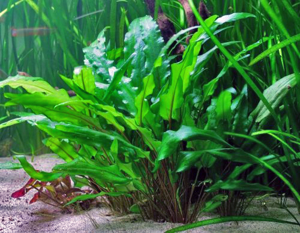
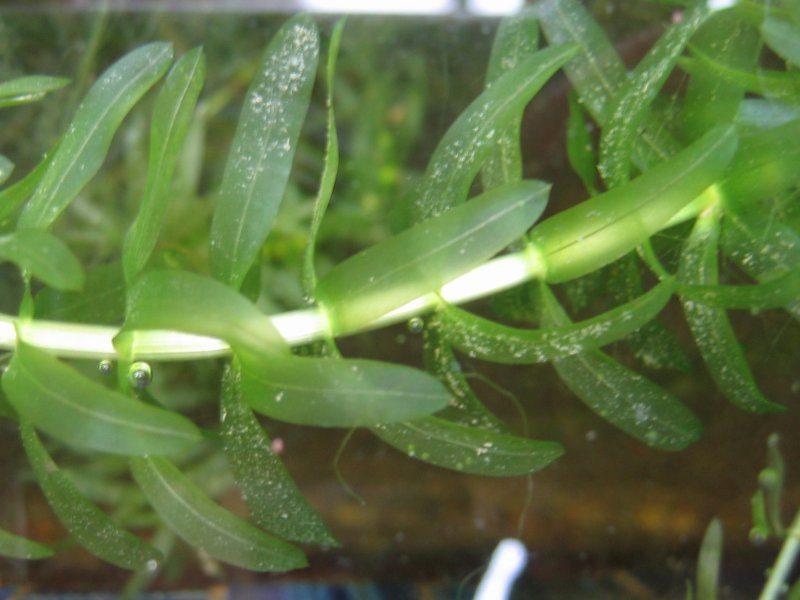

Anubias
Wytrzymały, wolno rosnący, dobry do mocowania na korzeniach.
Wytrzymały, wolno rosnący, dobry do mocowania na korzeniach.

Daje spokojną zieleń i dobrze wypełnia drugi plan akwarium.

Szybko rośnie, konkuruje z glonami i daje schronienie młodym rybom.
Kliknij kartę rośliny, aby zobaczyć dodatkową wskazówkę.